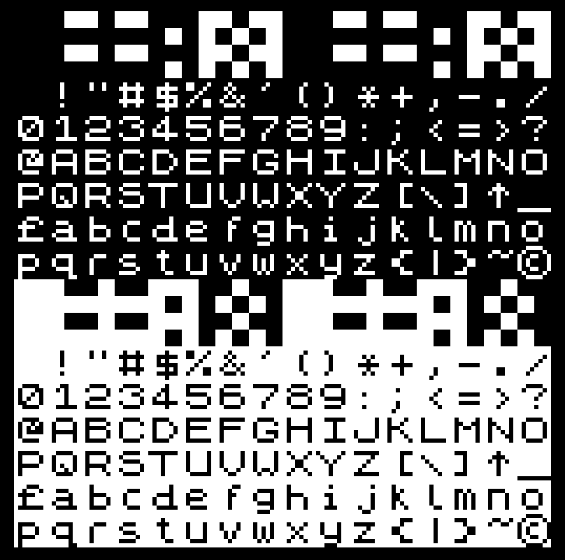
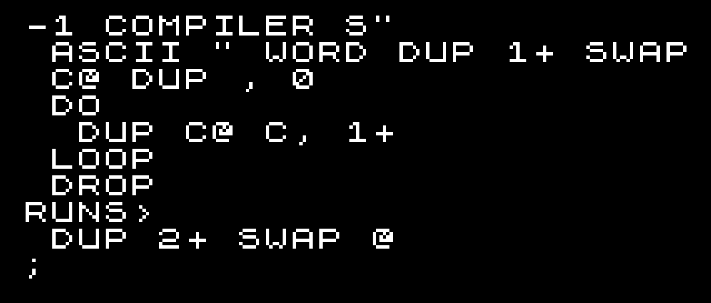
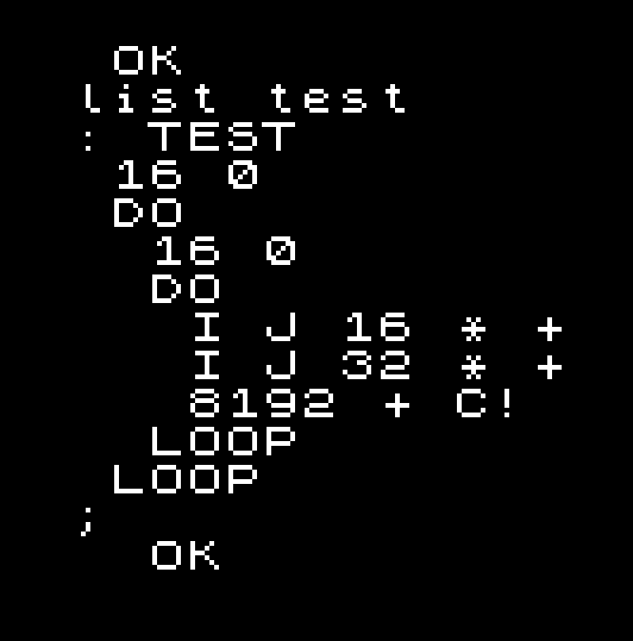
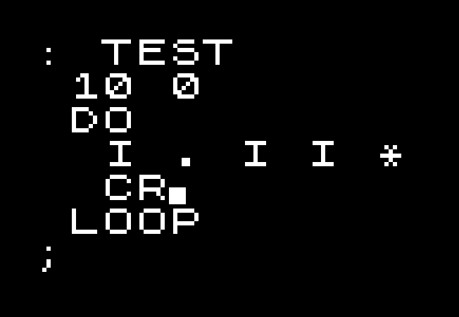

Seeking Inspiration from Jupiter Ace Forth
March 23, 2020

Jupiter Ace
- Company: Jupiter Cantab
- Founders: Richard Altwasser (hardware) and Steven Vickers (software)
- Had worked on ZX-81, ZX-Spectrum at Sinclair
- Named after Automatic Computing Engine (early British Computer)
Specifications
- CPU: Zilog Z80A 3.25MHz
- ROM: 8KB
- RAM: 1KB base (expandable to 49KB)
- Video RAM: 1KB charmap, 1KB charset (write only)
- 10 x 4 = 40 QWERTY Membrane keyboard
- Character set: ASCII-1967 + ↑, £ and ©
Jupiter Ace Forth
- 134 Built-in Words
- Double and Float Words
- Special DEFINER and COMPILER Words
- No disk drive → Dictionary Editing
Sinclair ZX-80

- Z80 3.25 MHz
- 1KB RAM!
- 4KB ROM BASIC
Sinclair ZX-81


- Z80 3.25 MHz
- 1KB RAM!
- 8KB ROM BASIC
Sinclair ZX Spectrum


- Z80A 3.25MHz
- 16-colors
- 16KB ROM BASIC, 16-128KB RAM
Jupiter Ace Graphics
Zilog Z80 CPU
- 8-bit CPU, with 16-bit Register pairing
- Binary compatiable with Intel 8080
8080 Registers
- A, Flags (AF)
- B, C (BC)
- D, E (DE)
- H, L (HL)
- SP (16-bit)
- PC (16-bit)
Z80 Registers
- A, Flags (AF)
- B, C (BC)
- D, E (DE)
- H, L (HL)
- IX (16-bit)
- IY (16-bit)
- SP (16-bit)
- PC (16-bit)
Forth Register Use
- AF - Temporary
- BC - Temporary
- DE - Temporary
- HL - Temporary
- IX - System Variables ($3C00)
- IY - Interpreter Pointer
- SP - Return Stack Pointer (IP on top)
- $3C3B - Data Stack Pointer
Interpreter (fast)
; DE = *IP++; (IP==*SP) POP HL LD E,(HL) INC HL LD D,(HL) INC HL PUSH HL ; HL = *DE++; EX DE,HL LD E,(HL) INC HL LD D,(HL) INC HL EX DE,HL ; goto HL JP (HL)
Interpreter (slow)
- Check for stack underflow
- Check free memory
- Check BREAK key
- Call iy_fast
Memory Map
- 0000 - 1FFF = ROM
- 2000 - 23FF = 768 charmap + 256 PAD (CPU wins)
- 2400 - 27FF = 768 charmap + 256 PAD (Video wins)
- 2800 - 2BFF = 1KB charset (CPU wins)
- 2C00 - 2FFF = 1KB charset (Video wins)
- 3000 - 3BFF = RAM 1KB x 3 mirrors
- 3C00 - 3FFF = RAM 1KB
- 3C00 - FFFF = Expansion RAM (0-48KB)
Defining Words
- Explicit syntax for defining words
DOES>only allowed inDEFINER- Allows redefinition, updating existing created words (caveats)
Defining Words
DEFINER CONSTANT , DOES> @ ;
Compiler Words
- Explicit syntax for words with inline data
RUNS>only allowed inCOMPILER- Implicitly
IMMEDIATE - Fixed or variable (-1) length
- Allows redefinition, updating existing references (caveats)
- Inline data isn't visible
Compiler Words
2 COMPILER LITERAL , RUNS> @ ;
Compiler Words
-1 COMPILER S"
ASCII " WORD DUP 1+ SWAP C@
DUP , 0
DO
DUP C@ C, 1+
LOOP
DROP
RUNS>
DUP 2+ SWAP @ ;
Compiler Words
List
Edit
REDEFINE
- Replace a word with the last word defined
- Allows for editing prior definitions
- Allows for renaming
- Moves words in memory! - Subtle ramifications
Built-In Dictionary Format
- NAME (n bytes)
- Link Field (2 bytes)
- Name Length & Flags (1 bytes, 0x40=immediate)
- Code Field (2 bytes)
User Dictionary Format
- NAME (n bytes)
- Length Field (2 bytes, length - name)
- Link Field (2 bytes)
- Name Length & Flags (1 bytes, 0x40=immediate)
- Code Field (2 bytes)
Relocatable Code
- Only some word forms and dictionary structure is fixed up
- Words are assumed to be position independent
- CREATEd and VARIABLEs should not store dictionary addresses
- Dispatch tables done with regular words
Dispatch Table
: mux ( n -- xt ) 2* r> + @ ; : operations ( n -- xt ) mux + - * / ; 7 3 1 operations execute . == 4 OK
Vocabularies
- Structured as a tree
- Linked list of all vocabularies
- Tricks to hook up child vocabularies
Vocabularies
VOCABULARY nameDEFINITIONSCURRENT(lookup)CONTEXT(writing)
Vocabulary Structure
- NAME (n bytes)
- Link Field (2 bytes)
- Name Length & Flags (1 bytes, 0x40=immediate)
- Code Field (2 bytes)
- Newest Word (2 bytes)
- Zero (1 byte, fake name length field)
- Next Vocabulary (2 bytes)
Vocabularies
Hello
Vocabularies
Hello
Vocabularies
Hello
Vocabularies
Hello
Word Types
- Listable
- Regular words
- DEFINER words, COMPILER words
- COMPILER word references (minus data)
- Comments/Print String
- Not Listable
- Code words, Defined words
- CREATEed words, VARIABLEs, CONSTANTs
- VOCABULARY words
Save and Load
- Cassette tape storage
- Optional filename
- Saves whole RAM dictionary
SAVE, LOAD, VERIFYBSAVE, BLOAD, BVERIFY
Emulators
- xAce
- Jupiler (Retrolandia)
- SpudACE, no$zx, EightyOne, Ace32xp, Vace, MESS, Multi Machine
Inspirations
- Sourceless Forth can work!
- Structure makes vocabularies nicer
- Less is more: color, blocks, limits on dictionary.
- Caution about the challenges for Forth adoption
ROM disassembly
User Manual
flagxor.com
slides
code